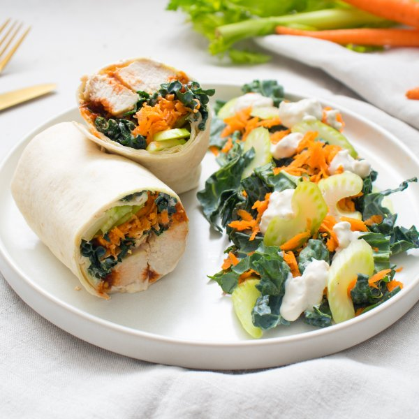

Buffalo Chicken Wraps with Kale, Carrot, Celery & Blue Cheese Salad

Total Time
35 min
Nutrition (per serving)
674.1 kcalCalories
58.3 gProtein
56.1 gCarbs
23.4 gFat
Full nutrition table
| Calories | 674.1 kcal |
| Total fat | 23.4 g |
| Saturated fat | 11.1 g |
| Trans fat | 1.2 g |
| Cholesterol | 163.9 mg |
| Sodium | 675.4 mg |
| Carbohydrates | 56.1 g |
| Fiber | 5.5 g |
| Sugars | 16.4 g |
| Protein | 58.3 g |
| Potassium | 1402.7 mg |
| Calcium | 396.4 mg |
| Iron | 4.3 mg |
| Vitamin A | 535.2 IU |
| Vitamin C | 55.5 mg |
| Vitamin D | 12 IU |
Cookware
Ingredients
- 4 mediumcarrots
- 4 stickscelery
- 1 ½ lbchicken breasts, boneless skinless
- 1 (4 oz) pkgcrumbled blue cheese
- 1 bunchkale
- 4large flour tortillas
- 1 cupplain Greek yogurt
- apple cider vinegar
- black pepper
- butter, unsalted
- chili-garlic sauce
- garlic powder
- honey
- onion powder
- salt
- Worcestershire sauce
Steps
- Place chili-garlic sauce, vinegar, honey, Worcestershire, and spices in a medium bowl; whisk to combine the Buffalo sauce.3 tbsp chili-garlic sauce
4 tsp apple cider vinegar
4 tsp honey
2 tsp Worcestershire sauce
½ tsp garlic powder
½ tsp onion powder
½ tsp salt - Holding a knife parallel to the cutting board, cut the chicken in half horizontally to form thin fillets; cut each fillet crosswise into 1-inch thick strips.1 ½ lb chicken breasts, boneless skinless
- Preheat a large skillet over medium-high heat.
- Once the skillet is hot, add butter and swirl to coat the bottom.2 tbsp butter, unsalted
- Add chicken and buffalo sauce to the skillet, tossing to coat. Cook, turning strips occasionally, until cooked through; 5-6 minutes. Remove skillet from the heat and set aside. (Reserve sauce bowl for later use.)
- Meanwhile, wash and dry the fresh produce.1 bunch kale
4 medium carrots
4 sticks celery - Using a clean cutting board, fold kale leaves in half lengthwise and slice off the stems. Chop or tear leaves into bite-sized pieces and transfer to a large bowl.
- Peel, trim, and grate carrots; add to the bowl with the kale.
- Trim celery and cut crosswise into ¼-inch pieces. Add to the bowl and toss to combine the salad.
- Place yogurt, blue cheese, water, Worcestershire, vinegar, and spices in the reserved bowl. Whisk to combine the dressing.1 cup plain Greek yogurt
1 (4 oz) pkg crumbled blue cheese
2 tbsp water
2 tsp Worcestershire sauce
2 tsp apple cider vinegar
½ tsp garlic powder
½ tsp onion powder
½ tsp black pepper
⅛ tsp salt - Place tortillas on a flat surface and spread with half of the blue cheese dressing. Divide chicken and half of the salad between them; roll tightly to close and cut in half.4 large flour tortillas
- Divide wraps between plates. Serve with remaining salad and dressing on the side. Enjoy!